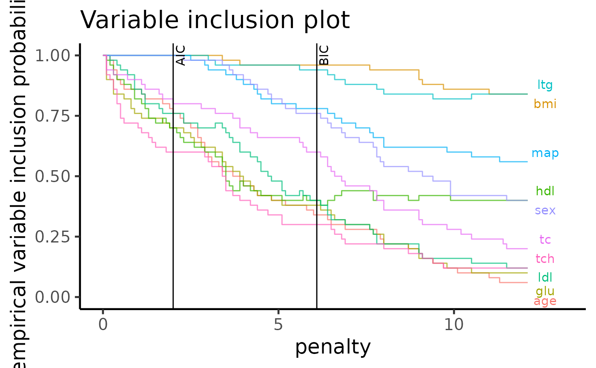

APES: diabetes data example
Kevin Y.X. Wang
School of Mathematics and Statistics, The University of Sydney, AustraliaGarth Tarr
School of Mathematics and Statistics, The University of Sydney, AustraliaJean Y.H. Yang
School of Mathematics and Statistics, The University of Sydney, AustraliaSamuel Mueller
Department of Mathematics and Statistics, Macquarie University, AustraliaSource:
vignettes/articles/diabetes.Rmd
diabetes.RmdIntroduction
Loading data
We will illustrate the speed of the APES method on the
diabetes data from the mplot package. As the
main motivation of the APES package is to make computational
improvements on the exhaustive search done by the mplot
package while maintaining a sensible approximation to the genuine
exhaustive search, it is necessary for us to check this is indeed the
case.
The diabetes data from the mplot package
has a continuous response variable measuring disease progression one
year after baseline. In order to illustrate APES, we will dichotomise
this response variable by spliting it at the median to create two
equally weighted classes and fit a logistic regression model.
diabetes = mplot::diabetes
x = diabetes %>% dplyr::select(-y) %>% as.matrix()
y = ifelse(diabetes$y > median(diabetes$y), 1L, 0L)
diabetes_binarised = data.frame(x, y)
glimpse(diabetes_binarised)## Rows: 442
## Columns: 11
## $ age <dbl> 59, 48, 72, 24, 50, 23, 36, 66, 60, 29, 22, 56, 53, 50, 61, 34, 47…
## $ sex <dbl> 2, 1, 2, 1, 1, 1, 2, 2, 2, 1, 1, 2, 1, 2, 1, 2, 1, 2, 1, 1, 1, 2, …
## $ bmi <dbl> 32.1, 21.6, 30.5, 25.3, 23.0, 22.6, 22.0, 26.2, 32.1, 30.0, 18.6, …
## $ map <dbl> 101.00, 87.00, 93.00, 84.00, 101.00, 89.00, 90.00, 114.00, 83.00, …
## $ tc <dbl> 157, 183, 156, 198, 192, 139, 160, 255, 179, 180, 114, 184, 186, 1…
## $ ldl <dbl> 93.2, 103.2, 93.6, 131.4, 125.4, 64.8, 99.6, 185.0, 119.4, 93.4, 5…
## $ hdl <dbl> 38, 70, 41, 40, 52, 61, 50, 56, 42, 43, 46, 32, 62, 49, 72, 39, 70…
## $ tch <dbl> 4.00, 3.00, 4.00, 5.00, 4.00, 2.00, 3.00, 4.55, 4.00, 4.00, 2.00, …
## $ ltg <dbl> 4.8598, 3.8918, 4.6728, 4.8903, 4.2905, 4.1897, 3.9512, 4.2485, 4.…
## $ glu <dbl> 87, 69, 85, 89, 80, 68, 82, 92, 94, 88, 83, 77, 81, 88, 73, 81, 98…
## $ y <int> 1, 0, 1, 1, 0, 0, 0, 0, 0, 1, 0, 0, 1, 1, 0, 1, 1, 1, 0, 1, 0, 0, …Performing variable selection on the diabetes data
Fitting the full model
Both APES and mplot were designed to have
an easy-to-use user interface where a user can simply supply a
glm object and get the analysis results rapidly. We will
fit the full model here.
##
## Call:
## glm(formula = y ~ ., family = "binomial", data = diabetes_binarised)
##
## Coefficients:
## Estimate Std. Error z value Pr(>|z|)
## (Intercept) -1.436e+01 3.722e+00 -3.859 0.000114 ***
## age 3.765e-03 1.014e-02 0.371 0.710491
## sex -1.120e+00 2.934e-01 -3.816 0.000136 ***
## bmi 1.490e-01 3.582e-02 4.161 3.18e-05 ***
## map 3.974e-02 1.074e-02 3.700 0.000215 ***
## tc -4.527e-02 3.215e-02 -1.408 0.159085
## ldl 3.573e-02 3.103e-02 1.151 0.249599
## hdl -1.761e-03 4.164e-02 -0.042 0.966266
## tch 3.128e-02 2.981e-01 0.105 0.916443
## ltg 2.696e+00 8.877e-01 3.037 0.002391 **
## glu 2.691e-04 1.327e-02 0.020 0.983815
## ---
## Signif. codes: 0 '***' 0.001 '**' 0.01 '*' 0.05 '.' 0.1 ' ' 1
##
## (Dispersion parameter for binomial family taken to be 1)
##
## Null deviance: 612.74 on 441 degrees of freedom
## Residual deviance: 418.97 on 431 degrees of freedom
## AIC: 440.97
##
## Number of Fisher Scoring iterations: 5Variable selection under 50 bootstrap using APES
apes_result = APES::apes(model = full_model, n_boot = 50)## No variable size specified, searching all sizes from 1 to p...
apes_result## Time taken: 0.02215892 minutes
## Total number of bootstrap APES results: 50Variable selection under 50 bootstrap using mplot
t1 = Sys.time()
mplot_result = mplot::vis(
mf = full_model,
B = 50,
redundant = FALSE,
cores = 1 ## mplot adds a redundant variable by default, we will suppress this
)
t2 = Sys.time()
cat("Time taken: ", as.numeric(difftime(t2, t1, units = "mins")), "minutes")Morgan-Tatar search since family is non-gaussian.
Time taken: 2.608035 minutesLooking at the time differences, it is clear that APES is faster.
However, it should be noted that APES only computed the best linear
model within each model size while mplot performed a
genuine exhaustive search across all GLMs. These results are thus not
intuitively comparable. However, the results presented in Wang et. al provide some
assurance that the results of APES are good approximations to a genuine
exhaustive search.
Comparing variable importance plots
One plot that both packages have implemented is the variable importance plot from Murray et. al. (2013). We will make a visual comparison between the two versions below to check if the final interpretations of these plots fit with our expectations.
The variable importance plot shows the stability of each variable as
empirical probability of selection against different penalty terms,
assuming a general information criterion formulation $-2 + (p + 1) $,
where \(\ell\) is the log-likelihood of
a model, \lambda is the penalty term and \(p\) is the number of predictors (excluding
the intercept term).
From APES:
plot(apes_result, type = "vip")
From mplot:
plot(mplot_result, which = "vip")
Based on the plots above, we see that both methods show similar
ordering of the variables as we should expect. As pointed out by the
mplot vignette, one of the most interesting feature of
this data is the cross-over between some selected variables (variables
hdl and tc which cross over after the BIC
threshold) which is preserved by the APES package.
Reference
Mueller, S. and Welsh, A. H. (2010), On model selection curves. International Statistical Review, 78:240-256. doi: 10.1111/j.1751-5823.2010.00108.x
Murray, K., Heritier, S. and Mueller, S. (2013), Graphical tools for model selection in generalized linear models. Statistics in Medicine, 32:4438-4451. doi: 10.1002/sim.5855
Tarr G, Mueller S and Welsh AH (2018). mplot: An R Package for Graphical Model Stability and Variable Selection Procedures. Journal of Statistical Software, 83(9), pp. 1-28. doi: 10.18637/jss.v083.i09
Wang, K. Y., Tarr, G., Yang, J. Y., & Mueller, S. (2019). Fast and approximate exhaustive variable selection for generalised linear models with APES. Australian & New Zealand Journal of Statistics, 61(4), 445–465. https://doi.org/10.1111/anzs.12276
Session Info
## R version 4.3.2 (2023-10-31)
## Platform: x86_64-pc-linux-gnu (64-bit)
## Running under: Ubuntu 22.04.3 LTS
##
## Matrix products: default
## BLAS: /usr/lib/x86_64-linux-gnu/openblas-pthread/libblas.so.3
## LAPACK: /usr/lib/x86_64-linux-gnu/openblas-pthread/libopenblasp-r0.3.20.so; LAPACK version 3.10.0
##
## locale:
## [1] LC_CTYPE=C.UTF-8 LC_NUMERIC=C LC_TIME=C.UTF-8
## [4] LC_COLLATE=C.UTF-8 LC_MONETARY=C.UTF-8 LC_MESSAGES=C.UTF-8
## [7] LC_PAPER=C.UTF-8 LC_NAME=C LC_ADDRESS=C
## [10] LC_TELEPHONE=C LC_MEASUREMENT=C.UTF-8 LC_IDENTIFICATION=C
##
## time zone: UTC
## tzcode source: system (glibc)
##
## attached base packages:
## [1] stats graphics grDevices utils datasets methods base
##
## other attached packages:
## [1] lubridate_1.9.3 forcats_1.0.0 stringr_1.5.0 dplyr_1.1.3
## [5] purrr_1.0.2 readr_2.1.4 tidyr_1.3.0 tibble_3.2.1
## [9] ggplot2_3.4.4 tidyverse_2.0.0 mplot_1.0.6 APES_1.0.0
##
## loaded via a namespace (and not attached):
## [1] tidyselect_1.2.0 farver_2.1.1 fastmap_1.1.1
## [4] promises_1.2.1 digest_0.6.33 timechange_0.2.0
## [7] mime_0.12 lifecycle_1.0.3 ellipsis_0.3.2
## [10] survival_3.5-7 magrittr_2.0.3 compiler_4.3.2
## [13] rlang_1.1.1 sass_0.4.7 rngtools_1.5.2
## [16] tools_4.3.2 utf8_1.2.4 yaml_2.3.7
## [19] knitr_1.45 labeling_0.4.3 doRNG_1.8.6
## [22] plyr_1.8.9 RColorBrewer_1.1-3 withr_2.5.2
## [25] desc_1.4.2 grid_4.3.2 fansi_1.0.5
## [28] xtable_1.8-4 colorspace_2.1-0 future_1.33.0
## [31] globals_0.16.2 scales_1.2.1 gtools_3.9.4
## [34] iterators_1.0.14 cli_3.6.1 rmarkdown_2.25
## [37] ragg_1.2.6 generics_0.1.3 reshape2_1.4.4
## [40] tzdb_0.4.0 cachem_1.0.8 splines_4.3.2
## [43] parallel_4.3.2 vctrs_0.6.4 Matrix_1.6-1.1
## [46] jsonlite_1.8.7 hms_1.1.3 ggrepel_0.9.4
## [49] listenv_0.9.0 systemfonts_1.0.5 foreach_1.5.2
## [52] jquerylib_0.1.4 glue_1.6.2 parallelly_1.36.0
## [55] pkgdown_2.0.7 codetools_0.2-19 stringi_1.7.12
## [58] gtable_0.3.4 later_1.3.1 shinydashboard_0.7.2
## [61] munsell_0.5.0 furrr_0.3.1 pillar_1.9.0
## [64] htmltools_0.5.6.1 R6_2.5.1 textshaping_0.3.7
## [67] rprojroot_2.0.3 evaluate_0.23 shiny_1.7.5.1
## [70] lattice_0.21-9 highr_0.10 leaps_3.1
## [73] memoise_2.0.1 httpuv_1.6.12 bslib_0.5.1
## [76] Rcpp_1.0.11 xfun_0.41 fs_1.6.3
## [79] pkgconfig_2.0.3